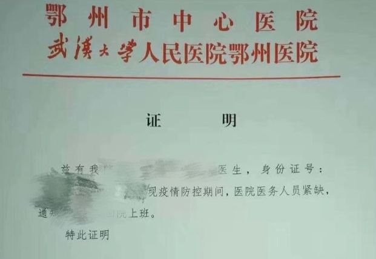

千里之外的温州，为何成湖北以外疫情最严重的城市
原文链接 备份链接 31.01.2020本文字数：2022，阅读时长大约3.5分钟 导读：武汉封城后，1月23日至27日5天，仍旧有1.88万人从湖北特别是武汉到达温州，平均每天有3600多人。 作者 | 第一财经 吴将 截至1月31日 …
“
我以为离开湖北就是安全的，没想到我让女儿过了一个没有地方住的新年。

鄂州，距离武汉只隔50km，距离黄冈只隔一座鄂黄大桥，这个被本地人自嘲是“肉夹馍”的城市，一向不被大多数人关注。
在封城期间，鄂州人的日常生活是怎样的，全民故事计划征集到一些鄂州人的生活日常，以下皆为当事人口述：
“女儿‘逃离”湖北，可她却居无定所”
周女士，59岁
鄂州市居民
这几天，我一直活在深深的自责当中。
我的女儿露露（化名）1月19日从上海回到鄂州，本来是一件值得高兴的事。露露上次回来还是国庆节的事情。
没想到武汉疫情爆发，刚到家我们就关注新闻报道的最新情况。许多在外工作的孩子都为了避免疫情感染，选择退票留在当地。
我对露露说，“湖北现在到处都是病毒，我们鄂州市有许多人都是从武汉回来的，与黄冈又隔这么近，要不你回上海吧？”
鄂州封城的当晚，我让露露连夜坐了鄂州去往上海的车，让她到了给我发消息报平安。但意想不到的事情发生了，露露回到上海后，出租屋的房东知道露露是从湖北返回去的，叫她第二天就搬走，不然就报警。
我让露露去住酒店。但是酒店因为露露是湖北籍的，拒绝让她入住。我在家急成一团乱麻，想着离开湖北也许会更安全，但是没想到会发生这样的情况。最后我想到在上海还有一个侄女，打电话过去求助，也被对方婉拒了。
实在没有办法，我发了一个朋友圈求助。许多热心的朋友给了我一些在上海湖北人开的酒店，我逐个打电话联系，对方听说是从湖北出城，全都婉拒了我。
最后一个好心人说，有一个空出来的工作室，可以临时供给露露自我隔离。这件事全都是我的错，我以为离开湖北就是安全的，没想到我让女儿过了一个没有地方住的新年。
“她们从武汉、黄冈来，到这里生孩子”
阿波，31岁
鄂城区医疗人员
没想到人生中第一次使用特权，是在这个新年：医院给我开的召回上班证明。
这些天，我一直在关注疫情的变化，医院的物资也告急。
从1月27日到今天（31日）连续上班5天，陆续接触了一些孕妇，她们都是特地从黄冈、武汉过来生孩子。

印象比较深的是一个从武汉来的孕妇。预产期是29日，28日来住院的时候，发烧，肺部感染，精神状态看上去也很不好，还很幽默地摸着自己的肚子说：这小兔崽子来得真不是时候，等卸货了老娘要揍他一顿解解气。
生孩子等于一个大手术，赶上了这种特殊时期，非常容易感染。免疫力低下，可以说拼的就是身体的抵抗力。我们当时都为她捏了一把冷汗。
所幸孩子昨天（30日）终于生下来了，是个小男孩，目前从平片来看，肺部没有问题，后面孩子要医学观察一段时间，妈妈也在作为疑似案例隔离恢复中。
“来不及验货，酒精被一抢而光”
小林，26岁
鄂州市区居民
接到鄂州市政府的文件通知，禁止拜年，禁止亲戚走动，在家除了睡觉上网，打扫卫生，做饭吃饭，只能默默地看着窗外的雨——湿漉漉的阴霾笼罩着这座城市。
我1月18日返乡过春节，北京西站到武汉站的高铁。在这之前，有关武汉的疫情并未引起大家的关注，车厢内有个别的人戴口罩，我是没有戴口罩的那群。两天后，我哥从京返乡，途经武汉回到鄂州。
妈妈是大年初一感冒的，在家睡午觉，起来后流鼻涕，轻微咳嗽。这可把我们吓得不轻，赶紧拿出体温计，测量体温36.4，还算正常，两个小时后，体温36.9，吃过感冒药后又去睡觉休息了，到了晚上体温已经37.6了。
妈妈的每一声咳嗽，都牵动着我们的心。
晚饭没来得及吃，我和我哥去家附近的药店，买些感冒药和酒精，做好居家隔离的准备。这是我们回家后第二次出门。
药店的门口贴着“口罩已卖完”的字样，二十多平的药店，挤满了十几个人。
每个人都提一大袋子，买药像买菜一样。
我们走过去，把妈妈的症状描述了一下，女店员没有太多耐心，扔给我们一盒莲花清瘟胶囊：“就吃这个吧。”我追问：“还有酒精吗？想给家里消消毒。”
她一摇手，“没了，全没了。”
正当我们准备拿着药准备结算时，角落一个中年男人拿着4瓶酒精排在我后面，我悄悄问，“不是说卖完了吗？”
他手一指，顺着他的方向看去，药店角落凌乱摆放着一些箱子。有空的，也有没拆的。另一个男人一看，走过去用钥匙划箱子。

这人嘴里不满地念叨着，明明有货说卖完了。这话被女店员听见，她冲过来：“不能动不能动！这是刚到的货，还没来得及验货，卖不了卖不了！”
另一个女店员也嚷着，“一个人一次限购2瓶，放回去！”可是大伙根本不听，等女店员转身，大伙一哄而上，一箱子酒精瞬间抢空。我趁机也抢了2瓶。
回去的路上，爸爸打电话来说，今天大年初一，快回来吃饭吧，熬的鸡汤都快冷了。我们提着好不容易买到的药，心里很不是滋味。
“为了让我爸戴口罩，父女关系决裂”
小娇，24岁
鄂州乡镇居民
我在家关注着微博热搜新增的数字变化，激动地把手机递给我爸，“你看你看，又新增确诊了17个。”我爸不以为然，不耐烦地推开我的手说，“哎哟，你别造谣了。”
我说：“这怎么是造谣呢，这是央视新闻官方发布的疫情通告，不信你看嘛！”我爸看都不看一眼，笑着双手插兜，准备去镇上买年货。
想让我爸戴口罩出门是一件不容易的事，这几天他对我的口头禅就是，“别造谣了。”我爸是个泥匠工，烟棍，五十多岁，没读什么书，不太会上网，半年前还闹过一回胃病。
现在他获取信息的渠道就是看电视，听别人说给他听，可电视新闻上关于疫情的报道并不多。他坚信自己活了大半辈子，人生的大风大浪都见过了，这次的疫情，当然也是小事。
村子平日里并没有多少人，大多都在镇上买了房子，只剩几个老人。过年比平日里热闹，都是在外做生意回来的，也有一部分是在武汉打工的。过年就喜欢聚在一起唠嗑，打牌。他们都不戴口罩，还嘲笑戴口罩的人，“会作样子”。
我爸那天正要出门去镇上，我从床上跳起来，伸手递过去一个口罩，我说“戴上吧”，他把我重重一推，说，“你出去看看，去看看谁戴口罩了？书读那么多有什么用？2012年说世界末日的，是不是末日了？”
我说这个病毒很厉害，特别容易传染给中老年人。他说：“你就看着我会不会得病毒！”我没再接下去，没想到我爸会发这么大的脾气。气得我关上房间大哭了一场，觉得很委屈，戴上口罩防护着也不会损失什么。
于是我拨通镇政府的电话，问为什么不正当宣传，不加大力度对此事进行引导，感染了怎么办。对方则回，目前还没有发现感染群众，不必搞得人心惶惶。我当即挂断了电话，立刻拨给了区政府，这一次得到了肯定的回答，说会立即推进相关宣传工作。
现在我们村子已经封了。我爸也看到了电视新闻上发布的消息。
“都什么时候了，拜年就免了”
刘彬，30岁
小餐厅老板
我是农村长大的，后来在城区学厨，结婚的时候和老婆买了我们自己的小房子，一年后我们的第一个宝宝出生了。于是就决定用我们手头的积蓄，开一个自己的小餐馆，做小本生意。今年是我们开餐厅的第一年。
虽然餐厅不大，但开餐厅是很累的，每天早上要去市场买菜，一直忙到深夜九点半以后。大概在1月18日左右，除了日常招待客人，我还做了很多鱼丸、肉丸、鱼刺骨之类用来零卖。
当时就想着能早点收工过年，好好休息一下，好好陪伴儿子。所以在1月19日这天，我和老婆就关了餐厅。
后来，我听老婆说到病毒的事，她平时喜欢刷微博看人家化妆。我们就待在家里，因为餐厅关门，自己也囤了很多吃的，也不怎么出去买菜。但是儿子很闹腾，一直想出去玩。
到了年初一，我和老婆商量，要不要去丈母娘家送礼。丈母娘打来电话说，“都什么时候了，拜年就免了。”
我说要去我姐家拜年，她在微信给我发来打架的视频，是他们村子里因为不要外来人口进村拜年，于是打了一架。
今年过年虽然缺了些年味，但是没有什么比健康更重要。
“超市被搬空了，菜价翻倍涨”
陈女士，42岁
鄂州超市售货员
我是鄂州市武商量贩超市的一名负责内衣区的售货员，包括保暖内衣、睡衣这块，也是两个孩子的妈妈。
封城后，这几天我都戴着口罩去上班。家里口罩不够用，一次性的口罩戴了2天，药店的口罩也早就卖完了。但是过年超市里人多，我和另外一个同事分早晚班，负责内衣区域，每个月1800的工资加上2％的提成。
大年初二，我上早班。街上看不到什么人，小区门口有个社区管理，用大喇叭宣传让我们勤洗手、戴口罩，说了三遍。这大概就是我儿子经常说的，“重要的事情说三遍。”
城里的小车全都不让走了，只有政府调动的132台车子可以走，街上没什么人，也没什么车，过马路都不用看红绿灯。

超市是人最多的地方，超市的收银台在一楼，排队结账的人从一楼排到了二楼的内衣区域。通道里挤得满当当的。大家大多买的都是吃的，茼蒿之前19.9元一斤涨到29.9元一斤，也被抢购一空。
有个小姑娘跑过来问我，说泡面放在哪里了，我手指向零食区，转眼，泡面也卖空了。
“门诊挤满了，不乏普通感冒的病人”
周蓝，27岁
鄂城区医院医疗人员
前几天，医院刚爆出这个事情的时候，立即征集我们每个科室去领取医疗用品。但由于疫情发生速度太快太突然，根本没有充足的物资发放到各个科室。
我是放射科的医生，每一位在门诊看过的、有问题的病人都要来我们科室做检查，但是我们只发放医疗外科口罩，没有医用护目镜，医用防护服。来医院看病的病人还是很多，门诊都挤满了，这其中不乏只有感冒普通发烧的病人。
不要恐慌，这是大家要做到的很重要的事。对于疫情的发生，我们能做的是对抗病毒，了解病毒的防护知识、基本症状。
鄂州连续好几天的阴雨天气，加上天气寒冷，许多免疫力低下的人就出现感冒，如果这时候就来医院，很有可能会出现交叉感染。另外一方面，也应该做好防护，不能掉以轻心，我们相信很快可以控制住疫情。
前两天还没封城，我打车回家，连出租车司机都戴上了口罩，说是公司规定一定要带。当然很多人没有戴口罩，也有可能是因为根本买不到口罩了。
大年三十，和同科室的同事换班，回到乡下去看爷爷奶奶，村里的宣传车用大喇叭喊着：不能串门、不能拜年，禁止走动。我爷爷奶奶刚开始特别固执地要出门，在我和我爸的几番劝说下，才保证过年不出门。
除夕夜还能听到烟花声，在爷爷奶奶家烤火的感觉真好。大年初一晚上十一点，窗外在下雨，我被召回医院上班，因为十二点要彻底封城，我爸连夜开车送我回城。
把我送到城里的家后，父亲跟我交代几句，关门前还特地看了我一眼，叫我照顾好自己。我戴着口罩开始哭。我爸还要开车回去上班，外面还下着大雨。
征 集
我们想通过全民故事计划这个平台，让大家了解湖北每个地区：武汉、黄冈、鄂州、黄石、孝感、襄阳、荆州、荆门、随州、咸宁、十堰、宜昌、恩施州、天门、仙桃、潜江、神农架林区，每个县、每个村镇的真实日常。
在湖北的你，可以将你的经历告诉我们。
无论是一段话还是一张图片，都可以在全民故事计划的公众号后台，直接发送给我们。
希望这次，我们能够一起渡过这一难关。
撰文 | 游玲玲
编辑 | 蒲末释
▼
全民故事计划正在寻找每一个有故事的人
讲出你在乎的故事，投递给
tougao@quanmingushi.com
故事一经发布，即奉上千字300元-1000元的稿酬

请您支持一下全民故事计划，点击在看
原文链接 备份链接 31.01.2020本文字数：2022，阅读时长大约3.5分钟 导读：武汉封城后，1月23日至27日5天，仍旧有1.88万人从湖北特别是武汉到达温州，平均每天有3600多人。 作者 | 第一财经 吴将 截至1月31日 …
原文链接 备份链接 《战疫口述记》，是燃财经在新型冠状病毒肺炎期间推出的特别栏目，记录疫情亲历者的观察和感受。本文为第3篇，查看前2篇请点击《农村这样防肺炎》《我在武汉战肺炎》。 作者 | 苏琦 金玙璠 孟亚娜 唐亚华 孔明明 魏佳 …
原文链接 备份链接 医疗防护资源不足是常态，各地资源调配需平衡，“灯下黑”区域渐次光亮，但少数地区的疫情宣传依旧不到位 外地务工返乡者最担忧的问题是年后经济收入断流、地域歧视，担心节后可能无法返工 本文首发于南方人物周刊 文 | 本刊记 …
原文链接 备份链接 离开湖北境内的时候，我百感交集。我的父母和亲友还在那里，他们将会面临什么，谁也不知道。 作为一个去过疫区、带着孩子又成功离开的湖北人，我有责任把这几天的历程客观记录下来，希望能够给诸多还在恐慌中的人多少一些参考意义。 …
原文链接 备份链接 1月23日清早起来时，看到武汉封城的消息。起床后跟正在做饭的母亲说了一声，母亲不是很能理解，也不大关注。这几天一直在她耳边念叨太多疫情的事情，我感觉她都有些消化不过来了。很快黄冈市区也封城了，到了下午我老家武穴也传出了 …